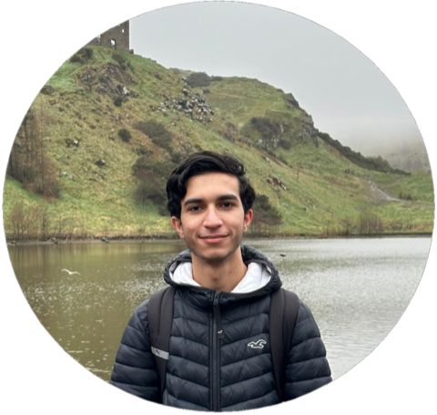

Ibrahim Aldarmaki
Graduate student, School of Computer Science, Carnegie Mellon University
Graduate student, School of Computer Science, Carnegie Mellon University

Hi! I am a second-year research master's student in the School of Computer Science at Carnegie Mellon University, where I work with Prof. Bhiksha Raj and Prof. Barnabás Póczos.
I am interested in generative models and representation learning, and in the theory behind them: why they work, what they cannot do, and what they do in the places the training data never reached. I like problems where a bit of mathematics changes how you build things, and I enjoy sitting with the same problem for hours until it makes sense.
Before CMU, I studied Electronics and Electrical Engineering at the University of Edinburgh. I then worked at MBZUAI with Prof. Thamar Solorio and Prof. Hanan Aldarmaki on code-switching and speech enhancement. After that I spent some time at Khalifa University working on Wi-Fi sensing, and went back to MBZUAI to work with Prof. Jin Tian and Prof. Kun Zhang on causality and machine learning. During my undergraduate studies I spent a summer at the Mohammed Bin Rashid Space Centre working with data from the Emirates Mars Mission.
I walk a lot, and much of my thinking happens on those walks. I like carrying a problem around for a few days and coming back to it, and some of the ideas I like most came out of long conversations.
I also like hiking and taking pictures, mostly of clouds and of places I have walked through. A few of them are here.
I still come back to the acknowledgment of my undergraduate thesis. It reminds me of the unexpected paths that shape the way we think, and of the people who help us along the way.
Erdős number: 4.